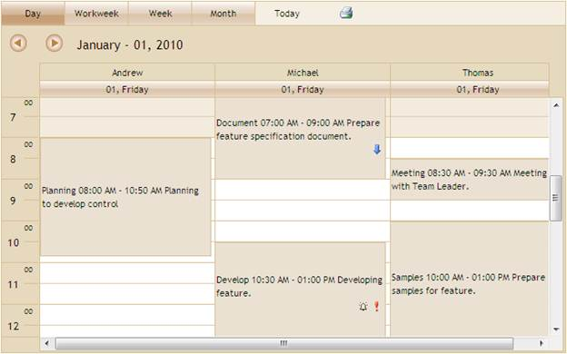
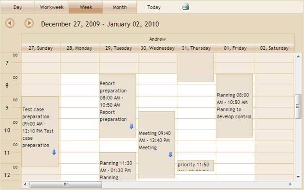
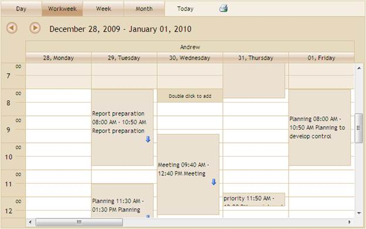
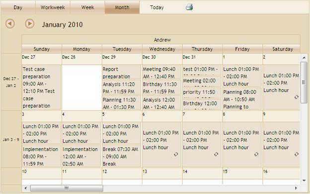

The steps to customize the ViewStrip toolbar using View Customization are as follows:
1. Create a model in the application.
2. Create a strongly typed view.
3. In View you can use its Model property in DataSource and bind your database fields into the corresponding Schedule fields.
|
View[aspx] <%=Html.Syncfusion().Schedule()("FlatSchedule") .DataSource((IEnumerable)Model) .BindList(columns => { columns.IdField("AppId"); columns.SubjectField("Subject"); columns.LocationField("Location"); columns.StartTimeField("StartTime"); columns.EndTimeField("EndTime"); columns.DescriptionField("Descrip"); columns.OwnerField("Resource"); }) %>
|
|
View[cshtml] @( Html.Syncfusion().Schedule()("FlatSchedule") .DataSource((IEnumerable)Model) .BindList(columns => { columns.IdField("AppId"); columns.SubjectField("Subject"); columns.LocationField("Location"); columns.StartTimeField("StartTime"); columns.EndTimeField("EndTime"); columns.DescriptionField("Descrip"); columns.OwnerField("Resource"); }))
|
4. Set the CurrentView() method to active view type.
|
View[aspx] <%=Html.Syncfusion().Schedule()("FlatSchedule") .DataSource((IEnumerable)Model) .BindList(columns => { columns.IdField("AppId"); columns.SubjectField("Subject"); columns.LocationField("Location"); columns.StartTimeField("StartTime"); columns.EndTimeField("EndTime"); columns.DescriptionField("Descrip"); columns.OwnerField("Resource"); }) .CurrentView(ScheduleViewMode.Week) .Skins(ScheduleSkins.Sandune) %>
|
|
View[cshtml] @( Html.Syncfusion().Schedule()("FlatSchedule") .DataSource((IEnumerable)Model) .BindList(columns => { columns.IdField("AppId"); columns.SubjectField("Subject"); columns.LocationField("Location"); columns.StartTimeField("StartTime"); columns.EndTimeField("EndTime"); columns.DescriptionField("Descrip"); columns.OwnerField("Resource"); }) .CurrentView(ScheduleViewMode.Week) .Skins(ScheduleSkins.Sandune) )
|
5. In Controller, add the Syncfusion.Mvc.Schedule, Syncfusion.Mvc.Shared namespaces.
|
[Controller] using Syncfusion.Mvc.Schedule; using Syncfusion.Mvc.Shared;
|
6. Set its data source and render the View.
|
[Controller] /// <summary> /// It is used to bind the Schedule /// </summary> /// <returns>View page, it displays the Schedule</returns> public ActionResult Index() { var data = new NorthwindDataClassesDataContext().AppointmentTables.Take(200); return View(data); }
|
7. Create a post method for Index action and bind the data source to Schedule, as shown in the code displayed below:
|
[Controller] /// <summary> /// Post Requests are mapped to this method. This method invokes the HtmlActionResult /// from the Schedule. Required response is generated. /// </summary> /// <param name="args">Contains post action properties </param> /// <returns> /// HtmlActionResult which returns data displayed on the Schedule /// </returns> [AcceptVerbs(HttpVerbs.Post)] public ActionResult Index(Params args) { IEnumerable data = new NorthwindDataClassesDataContext().AppointmentTables.Take(200); return data.ScheduleActions<ScheduleHtmlActionResult>(); }
|
8. Run the application. The Schedule will appear as shown below when CurrentView property is Day.

Figure 96: ViewType – Day
The Schedule will appear as shown below when CurrentView property is Week.

Figure 97: ViewType – Week
The Schedule will appear as shown below when CurrentView property is Workweek.

Figure 98: ViewType – Workweek
The Schedule will appear as shown below when CurrentView property is Month.

Figure 99: ViewType – Month